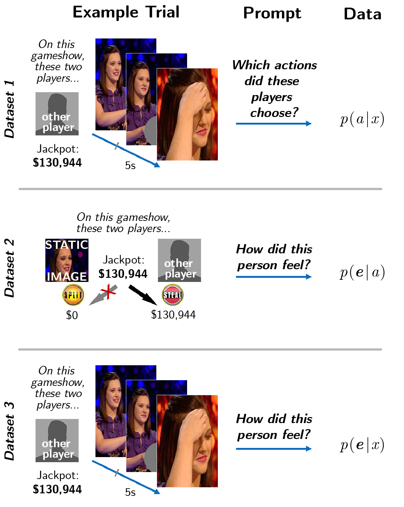

We artificially separated the perceptual information from context information in recordings of a televised British gameshow called Golden Balls. Every episode of Golden Balls culminates with two contestants playing a dramatic one-shot instantiation of the Prisoner's Dilemma. Each player is given a choice to "Split" or "Steal" a jackpot (in standard Prisoner's Dilemma notation, to "Cooperate" or "Defect", respectively). If both decide to Cooperate, they each receive half of the jackpot. If one player instead chooses Defect, that player wins the entire jackpot and the other player who chose Cooperate leaves with nothing. If both players choose Defect, both get nothing. Players negotiate with each other in front of a live audience in an attempt to convince the other to make a choice that is financially disadvantageous (to Cooperate). Each player makes a decision in private, then they simultaneously reveal their choices, all while being filmed.
The game is emotionally evocative by design. When the choices are revealed, players discover whether they have won or lost real and often substantial sums of money; and whether they have successfully cooperated, successfully duped, been duped by, or failed to dupe the other player. The TV cameras capture their spontaneous unscripted dynamic expressions, including changes of posture and expression of players' faces, shoulders, upper bodies, and hands.
We generated 88 videos of players who participated in the final round of the 5th season of the Golden Balls gameshow, which aired in 2009 (footage of the show was provided by Endemol UK). Videos were 5 seconds in duration, each depicting a single player's expressions, by splicing together footage from the moments surrounding the climactic reveal. The four outcomes were represented equally in the stimuli (N=22 for each outcome), reflecting the true distribution of play---across all 287 broadcast episodes, players were 53% likely to Cooperate, and the decisions of a player dyad (the two opposing players in the game) were statistically independent of each other. Each video silently showed a single person anticipating and reacting to a game outcome, but overt cues as to the players' decisions and the outcome of the game were masked.

In the example shown, the focal player Cooperated and her opponent Defected. Thus, the game outcome is CD; and the focal player received nothing while her opponent won the entire jackpot. In Dataset 1, observers guessed what actions (a in {CC, CD, DC, DD}) the players chose given a single player's dynamic expressions (x). In Datasets 2 an 3, observers judged the intensity that players would feel 20 fine-grained emotions on continuous scales. Observers rated all 20 emotions during every trial. In Dataset 2, observers predicted a player's emotions based on a description of the game outcome. In Dataset 3, observers watched a 5-second videos of players' dynamics expressions.
Emotion Reasoning - Stimuli Demos
Training Video (requires audio)
Participants where informed about the rules of the game. This included watching an example of a player dyad negotiating before revealing their decisions:
Spontaneous Dynamic Expressions
In Datasets 1 and 3, participants viewed 5-second expression videos. Each silent video features a single player's spontaneous expressions in the moments leading up to, and following, the game's climactic reveal. The first 2 seconds consist of footage featuring the player immediately prior to the decisions being revealed, and the remaining 3 seconds is composed of footage of the player reacting to the outcome. The raw footage was cropped and/or masked such that only a single player is visible in a given video. Overt cues as to the players' decisions were occluded. The broadcast footage regularly cut between the two players, so the 5 seconds of footage was gathered by taking the scenes of the player most temporally proximal to moment where the players simultaneously present their decisions to each other, the crowd, and the cameras.